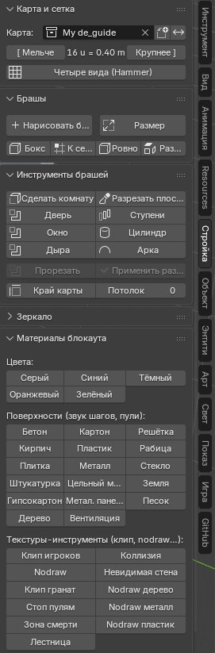
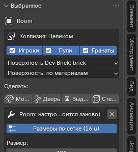
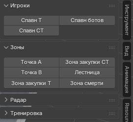
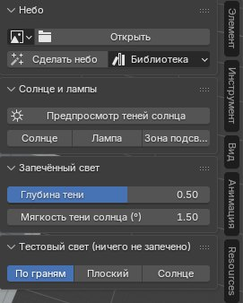
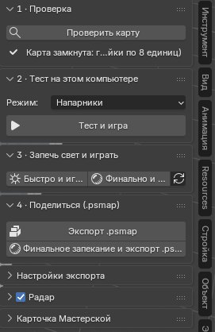
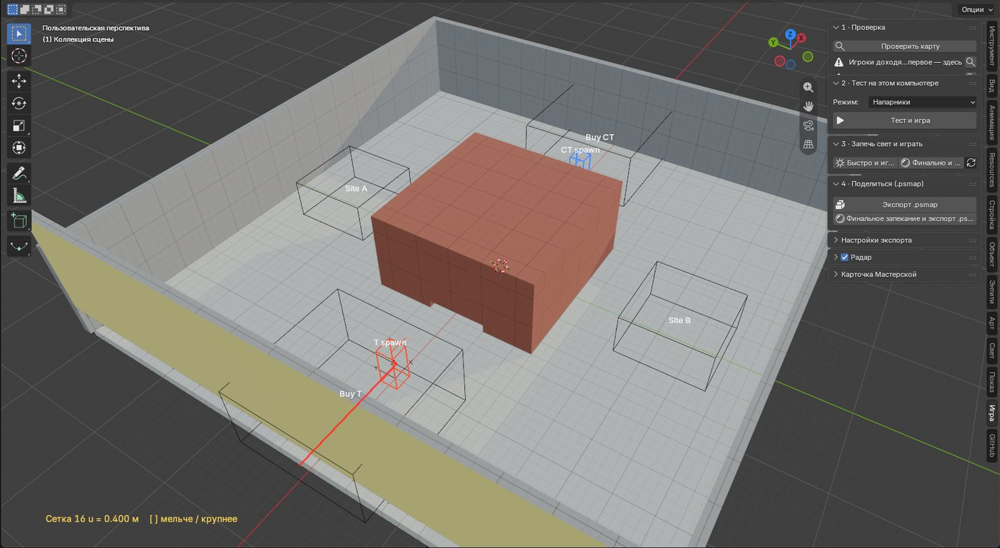

Как делать карты
Карты для Placeholder делаются в бесплатном Blender с нашим аддоном Map tools. Ничего не нужно уметь заранее: за вечер можно собрать первую карту, сыграть на ней и выложить её в мастерскую.
- ПК на Windows с установленной игрой
- Лаунчер Placeholder
- Blender 5.2 или новее — бесплатно
1Установка
Всё ставится из лаунчера, вкладка Мастерская, блок «Инструменты для карт».
- Blender. Если лаунчер пишет «Blender не найден», скачайте Blender 5.2 или новее с сайта blender.org и установите. Blender уже стоит, а лаунчер его не видит? Нажмите Указать blender.exe.
- Аддон. Нажмите Установить в Blender. Лаунчер сам поставит аддон Map tools и включит его. Когда выйдет новая версия, на этом месте появится кнопка Обновить.
- Игра для теста. Должна быть строка «“Test and play” в Blender сам запустит эту игру». Если там написано «Игра ещё не установлена», сначала установите игру на вкладке Игра.
- Нажмите Новая карта. Лаунчер откроет Blender сразу с окном новой карты (дальше — раздел 2).
2Первая карта
Карта собирается из простых блоков — брашей: пол, стены, ящики, лестницы. Сначала делают «коробку» из одноцветных блоков (это называется блокаут), играют, правят, и только потом украшают.
Новая карта
- В окне новой карты впишите название: латинские буквы, цифры и _, например de_mymap. Это имя карты в игре.
- Нажмите OK. Готово: в карте уже есть пол, по одному спавну для T и CT, сетка и четыре вида (сверху, спереди, сбоку и 3D).
- Файл сохраняется в Документы → PlaceholderShooter Maps → de_mymap. Не забывайте сохранять: Ctrl+S.
Все кнопки аддона — на боковой панели справа в окне вида (если её нет, нажмите N над видом). Вкладки идут по порядку работы: Стройка Build → Объект Object → Энтити Entities → Арт Art → Свет Light → Показ Show → Игра Play. Аддон говорит на языке вашего Blender; здесь у кнопок в скобках стоит английское название.
Стены, пол, комнаты
- Нарисовать браш Draw brush — главный инструмент. В виде сверху протяните прямоугольник, затем в виде спереди или сбоку — высоту. Жёлтые ручки меняют размер, перетаскивание внутри двигает. Enter — готово.
- Бокс Box — готовый блок у 3D-курсора. Курсор ставится Shift+правый клик. Размеры — в панели слева внизу (F9).
- Сделать комнату Make a room — выделенный блок становится комнатой: пол, потолок и четыре стены.
- Дверь, Окно, Дыра — проём в выделенной стене (или дыра в полу) там, где стоит 3D-курсор. Размер — снова F9.
- Ступени Stairs, Цилиндр, Арка — готовые формы.
- [ и ] — сетка мельче / крупнее. Всё прилипает к сетке; К сетке Snap выровняет то, что сбилось.
- Q над видом — круговое меню инструментов у мыши, F — настройки выделенного.
Края карты
Карта должна быть замкнута: обнесите её стенами без щелей, углы стен должны сходиться. Потом выделите внешние стены и нажмите Край карты Map edge — аддон поставит над ними невидимые стенки, чтобы никто не выпрыгнул наружу.
Цвета и поверхности
Выделите браш и нажмите кнопку в Материалы блокаута Blockout materials. Цвета — просто чтобы различать части карты. Поверхности (бетон, металл, дерево…) влияют на звук шагов и на то, как пули пробивают стену. Красивые текстуры, модели и декали — на вкладке Арт Art, когда блокаут уже играется.

Двери, стекло, модели
Выделите браш и откройте вкладку Объект Object. Там видно, с чем он сталкивается (игроки, пули, гранаты), и есть кнопки Сделать: Модель / Дверь / Выдвижной / Стекло: браш станет открывающейся дверью, выдвижной стенкой или бьющимся стеклом.

3Спавны, точки, зоны закупки
Всё игровое — на вкладке Энтити Entities. Кнопка ставит объект у 3D-курсора (Shift+правый клик по полу, потом кнопка).
- Спавн T, Спавн CT — где появляются игроки. Ставьте на пол, не в стену. Ставьте по 5 на сторону для 5×5 и по 2 для «Напарников»: если спавнов меньше, чем игроков, они появятся друг в друге.
- Точка A, Точка B — объёмы на полу, где ставят бомбу.
- Зона закупки T / CT — где сторона покупает оружие в начале раунда. Обычно вокруг её спавнов.
- Лестница Ladder — тонкий объём у стены, по которому можно лезть. Зона смерти Kill zone — кто зайдёт, погибает (обрыв, вода).

Что нужно каждому режиму
| Режим | Что должно быть на карте |
|---|---|
| Песочница | Ничего, кроме пола: побегать и посмотреть карту. |
| Все против всех | Спавны (любой стороны). |
| Командный бой | Спавны T и спавны CT — на разных концах карты. |
| Напарники 2×2 | Спавны T и CT, одна точка закладки, зоны закупки. |
| Закладка бомбы 5×5 | Спавны T и CT, точки A и B, зоны закупки. |
Если для режима чего-то не хватает, аддон предупредит, а игра предложит на этой карте только «Песочницу» и «Все против всех». Радар (карта в углу экрана) делается сам при экспорте.
4Свет и запекание
Свет в игре заранее «запекается» в текстуры: так карта красиво выглядит и быстро работает даже на телефоне.
- Небо. Вкладка Свет Light → Небо: откройте свою картинку неба, возьмите из Библиотеки или нажмите Сделать небо.
- Солнце. Солнце и лампы → Солнце. Стрелка солнца показывает, куда идёт свет; поверните его клавишей R. Где оно стоит — неважно. Предпросмотр теней солнца покажет тени прямо в Blender.
- Лампы — для помещений: Лампа ставится у курсора, яркость и дальность — в F9. Зона подсветки слегка высветляет слишком тёмные углы.
- Запекание — на вкладке Игра, шаг 3 (ниже). Пока свет не запечён, в тесте карта освещена ровным «тестовым светом» — для проверки геймплея этого хватает.

5Проверка, тест и экспорт
Вкладка Игра Play устроена по шагам — сверху вниз.
- 1 · Проверка → Проверить карту. Аддон найдёт, что сломается в игре: спавн в воздухе, дыру наружу, нет точки закладки. Лупа рядом с проблемой показывает её место. Знак ✓ — всё хорошо.
- 2 · Тест на этом компьютере: выберите Режим и нажмите Тест и игра Test and play. Аддон сохранит карту, соберёт её и запустит игру прямо на ней, без входа в аккаунт. Если игра уже открыта — карта загрузится в ней. Поправили — жмите снова.
- 3 · Запечь свет и играть: Быстро и играть — грубый свет за секунды, чтобы прикинуть. Финально и играть — чистые тени, занимает минуты; там же можно выбрать «Финальное релиз» — самые гладкие края теней (в 4 раза дольше), для публикации. Если с прошлого запекания ничего не менялось, повторно не печёт.
- 4 · Поделиться (.psmap): Экспорт .psmap — вся карта в одном файле рядом с .blend; Финальное запекание и экспорт .psmap — то же с финальным светом.
Экспортированная карта появляется в лаунчере: Мастерская → Мои карты. Там есть Играть (игра откроет «Свой сервер» с этой картой — режим выберете там), Открыть в Blender и Показать в папке.
Перед публикацией заполните Карточка Мастерской внизу вкладки: название, автор, описание, версия. Поставьте вид покрасивее и нажмите Сделать картинку (этот вид) — это обложка карты.

6Публикация
Опубликованную карту видят все игроки: в лаунчере и в игре, в мастерской.
- Экспортируйте карту (раздел 5) — лучше с финальным светом.
- Лаунчер → Мастерская → Каталог → Опубликовать карту.
- Карта публикуется от вашего аккаунта: откройте игру и нажмите в лаунчере Войти через игру.
- Выберите карту, напишите описание (что это за карта, как в неё играть), отметьте теги, добавьте до 5 скриншотов и нажмите Опубликовать.
- Новая версия: экспортируйте карту снова, откройте её в «Каталоге» (помечена «Ваша карта») и нажмите Опубликовать новую версию. В поле «Что нового в этой версии» напишите, что поменялось.
Без публикации: файл .psmap можно просто отправить другу. Он перетащит его в лаунчер (Скачанные) или нажмёт + Добавить карту (.psmap) — карта появится и в игре.
В игре: Мастерская → Каталог или На устройстве → Играть: откроется «Свой сервер» с картой и её режимами — можно позвать друзей.
7Частые ошибки
Почти все проблемы находит Проверить карту на вкладке «Игра». Нажмите лупу рядом с ошибкой — вид покажет, где она.

Утечка: карта не замкнута…Где-то есть щель наружу, красная линия ведёт к ней. Чаще всего это угол, где стены не сошлись. Закройте щель стеной и выделите внешние стены → Край карты.
Игроки доходят до самого края карты…Игрок может выйти туда, где дальше ничего нет, и упасть. Поставьте стену или Край карты на этом месте.
Нет спавна для T / для CTДобавьте спавны на вкладке «Энтити» → «Игроки».
…: под ним нет пола / внутри брашаСпавн висит в воздухе или стоит в стене. Опустите его на пол (поставьте 3D-курсор на пол и добавьте спавн заново).
Режиму … нужно: …Для выбранного режима не хватает спавнов или точек (таблица в разделе 3). Без них игра покажет только «Песочницу» и «Все против всех».
Пар брашей с гранями одна над другой…Два браша наложились, и стена в игре будет мерцать. Сдвиньте один, чтобы они только касались.
Не замкнут: есть дырыУ объекта нет части граней. На вкладке «Объект»: Сделать сплошным или Показать дыры.
Вне коллекции картыОбъект лежит не в карте, и в игру он не попадёт. Кнопка Перенести в карту на вкладке «Объект».
Игра не задана / Игра слишком стараяУстановите или обновите игру через лаунчер — «Тест и игра» найдёт её сама.
Была выделена стена, и кнопка зоны превратила её в зону. Ctrl+Z, снимите выделение (Alt+A) и добавьте зону снова.
Остались вопросы? Список клавиш есть в самом аддоне: вкладка «Стройка» → Клавиши и помощь. А ещё можно спросить в чате тестеров в Телеграме.